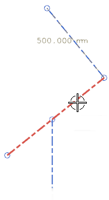
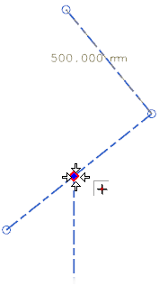
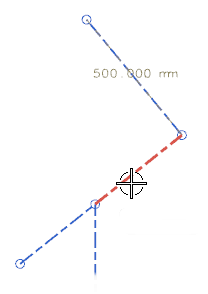

即使下方的管线段现在与倾斜管线段相交，但是并没有在该点断开。如果您将您的光标指针放在倾斜管线段上，您会看到它仍然是一条管线段。

为了让管线控制点控制两条管线段的交点，您需要第一条管线段的终点处将中间的管线段分割开。
右击中间的管线段然后选择细分段。
在类型列表中，确保选择的是在点上。
在再分割点组中的位置列表中，选择通过点。
选择管线控制点。

点击确定。
现在如果您将光标放在倾斜管线段上，您将会看到管线段已经被分割。
